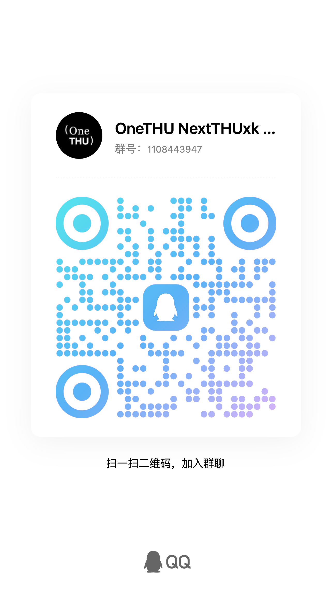

使用问题、功能需求与插件收录都在这里：先看交流群，需要留痕的走 Issues。

群里可以问用法、提功能需求、交流使用经验，也可以先看看别人遇到的问题是否和你一样。
课表、作业、图书馆座位、校园卡在哪里设置，群里问最快。
希望增加的功能或希望接入的校园系统，直接说；被采纳的会进版本说明。
需要留痕、需要附日志、可能被反复跟进的问题，请走 Issues（下方）。
在 GitHub Issues 提交，按下面几项附上信息，定位会快很多。
设置 → 关于，可看到版本号与代号。
设置 → 通知 → 诊断，用于核对权限与提醒排程状态。
设置 → 关于 → 导出日志；Android 会转存到系统下载目录。
具体操作路径与预期结果；涉及接口的问题请勿附带账号、学号或成绩。